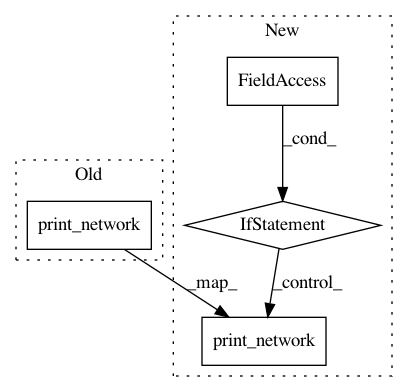

c7f7d1979a35b443dba7e776203ed7084efecf77,models/cycle_gan_model.py,CycleGANModel,initialize,#CycleGANModel#Any#,18
Before Change
print("---------- Networks initialized -------------")
networks.print_network(self.netG_A)
networks.print_network(self.netG_B)
networks.print_network(self.netD_A)
networks.print_network(self.netD_B)
print("-----------------------------------------------")
def set_input(self, input):
After Change
print("---------- Networks initialized -------------")
networks.print_network(self.netG_A)
networks.print_network(self.netG_B)
if self.isTrain:
networks.print_network(self.netD_A)
networks.print_network(self.netD_B)
print("-----------------------------------------------")
def set_input(self, input):
AtoB = self.opt.which_direction == "AtoB"
In pattern: SUPERPATTERN
Frequency: 4
Non-data size: 4
Instances
Project Name: richzhang/colorization-pytorch
Commit Name: c7f7d1979a35b443dba7e776203ed7084efecf77
Time: 2017-07-05
Author: junyanz@berkeley.edu
File Name: models/cycle_gan_model.py
Class Name: CycleGANModel
Method Name: initialize
Project Name: junyanz/pytorch-CycleGAN-and-pix2pix
Commit Name: 233630e79d79901faff420eb0ae481b35d952f97
Time: 2017-07-03
Author: junyanz@berkeley.edu
File Name: models/pix2pix_model.py
Class Name: Pix2PixModel
Method Name: initialize